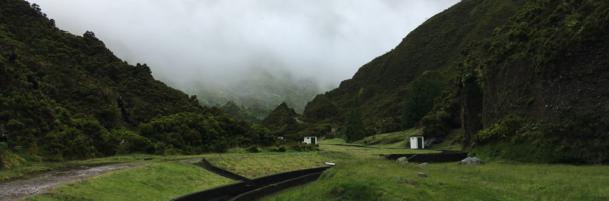
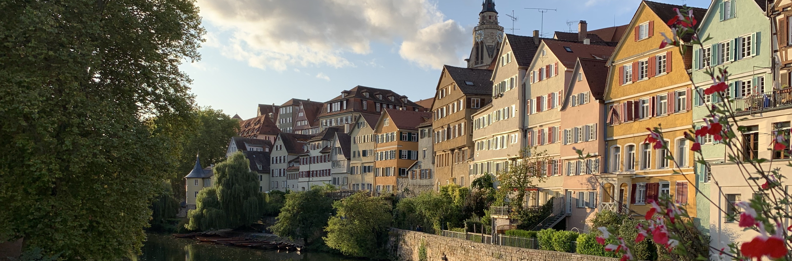

Vila Franco do Campo
São Miguel, Portugal
Las Setas
Sevilla, Spain

Neckarbrücke
Tübingen, Germany
Valle di Ledro
Trentino, Italy
Functional programing nerd, computational logic fanboy.
Theoretical Philosophy and passionate photography enthusiast.
Will use any opportunity to set up a new Haskell project or pack my things for a trip.
Working at Database Provenance Analysis @University of Tübingen
B.Sc. Thesis: How-Provenance Through Query Rewriting